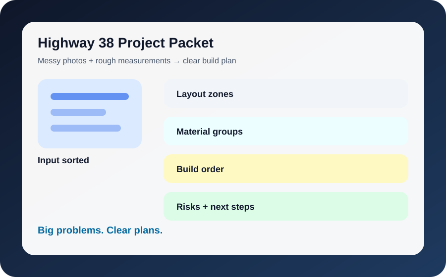
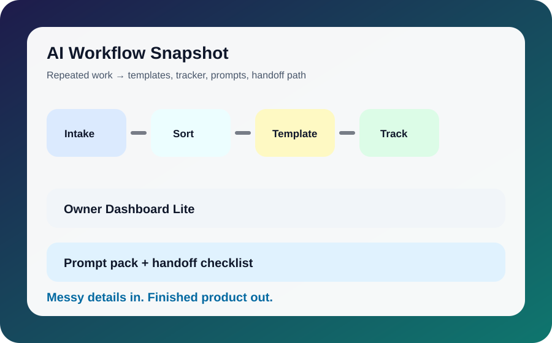

Project Packet
Rough photos and measurements become layout zones, materials, build order, and next steps.
The old reference-photo placeholders are being replaced with built-in Highway 38 visual snapshots. Real customer-approved photos can replace these later.
These visuals are local files in the repo, so they should load reliably on GitHub Pages.

Rough photos and measurements become layout zones, materials, build order, and next steps.

Machine or workflow pain becomes bottleneck notes, fixture questions, ROI assumptions, and vendor quote prep.

Repeated office/shop tasks become templates, dashboards, prompt packs, and handoff steps.
This is the customer-facing quality standard.
The customer’s actual problem is restated in plain language.
Facts, assumptions, missing information, and risks are separated.
The deliverable is a plan, tracker, concept, checklist, quote path, or handoff that can be acted on.
No licensed engineering, permit, electrical, safety certification, or code-compliance signoff is implied.
Send photos, notes, screenshots, files, or a rough explanation. Highway 38 will sort it into the smallest useful package first.